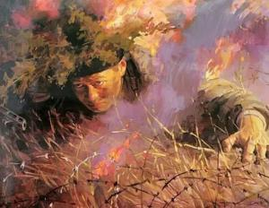

邱少云

邱少云（1926年-1952年10月12日），出生于重庆市铜梁区少云镇（原四川铜梁县关溅乡）玉屏村邱家沟，中国共产党党员，革命烈士、“朝鲜民主主义人民共和国英雄” 称号和金星奖章、一级国旗勋章获得者。
邱少云9岁丧父、11岁丧母、13岁被国民党军队抓去当兵。1949年12月参加中国人民解放军。1951年3月参加中国人民志愿军赴朝作战，1952年10月12日因美军燃烧弹落在邱少云潜伏点附近，火势蔓延全身，为避免暴露，放弃自救壮烈牺牲，年仅26岁。
人物生平
苦难童年

邱少云，1926年出生于铜梁县少云镇（原关建乡）一个贫苦贫农家庭。幼年失去双亲，孤苦无依。靠帮人推船为生的父亲就被船老板砍死在船上，不久母亲因贫病交加死在床头。14岁时他就开始了雇工生活，跟兄弟靠帮地主推磨，甚至讨饭度日，受尽了欺凌和白眼。在他幼小的心灵，深深埋下仇恨的种子。解放前夕，刚长成人的邱少云，被伪乡长抓壮丁，卖进国民党军队，饱受了挨打骂的辛酸。后被川军刘义的18团抓去当了兵。
盼来救星1948年，刘邓大军奉党中央毛主席命令挥师南下于1949年12月解放了成都，相应，四川获得了解放，邱少云一家和天下劳苦大众获得了新生，太阳出来了，来了救星共产党，邱少云作为解放兵毅然参加了中国人民解放军。
光荣入伍1949年12月，解放军挥师入川，进军大西南。成都战役后，川军瓦解。邱少云参加了中国人民解放军，被补进了当时的人民解放军第10军29师87团9连。
1950年秋，随连队参加四川内江地区剿匪，在高梁镇战斗中带病参战，奋勇当先，深入匪巢，毙伤匪徒10余名，协同战友活捉匪首。
赴朝作战
1951年3月，参加中国人民志愿军赴朝参战。部队开赴前线途中，他冒着美军飞机的扫射轰炸，从燃烧的居民房屋里救出1名朝鲜儿童。
壮烈牺牲 
12日12时左右，美军盲目发射燃烧弹，其中一发落在他潜伏点附近，草丛立即燃烧起来，火势迅速蔓延到他身上，燃着了棉衣。为了不暴露目标，确保全体潜伏人员的安全和攻击任务的完成，他放弃自救，咬紧牙关，任凭烈火烧焦头发和皮肉，坚持30多分钟，直至壮烈牺牲。
反击部队在邱少云伟大献身精神鼓舞下，当晚胜利攻占了391高地，全歼美军1个加强连。